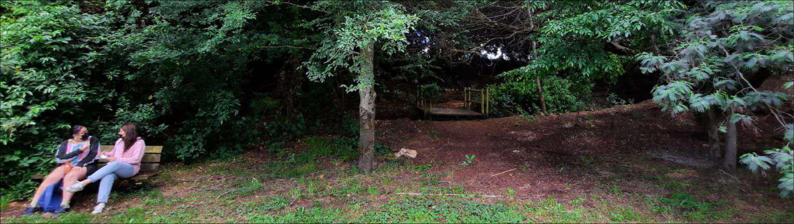

Pasarela
Es un lugar más reservado, para conversar en privado, pensar,tener una llamada o comer una colación. El sonido del riachuelo que está a un costado y las hojas de los árboles con el viento generan un ambiente mágico y tranquilo.
Actividades
Aquí podras encontrar un lugar ideal para leer o escuchar música, también podrás observar que es un lugar humedo por lo que se recomienda llevar alguna mantita.
Sabias que...
El riachuelo que se encuentra en ese lugar se creó de forma natural.